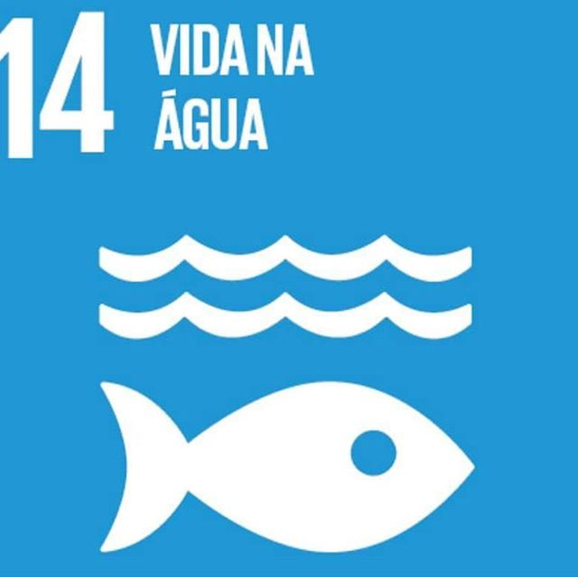

🌊 O que é a ODS 14?
A ODS 14 busca conservar e utilizar de forma sustentável os oceanos, mares e recursos marinhos. A vida marinha é essencial para o equilíbrio do planeta e para a sobrevivência de diversas espécies.

Protegendo os oceanos para as próximas gerações
A ODS 14 busca conservar e utilizar de forma sustentável os oceanos, mares e recursos marinhos. A vida marinha é essencial para o equilíbrio do planeta e para a sobrevivência de diversas espécies.
Os oceanos abrigam milhares de espécies, ajudam a regular o clima e fornecem alimentos e recursos para milhões de pessoas. Por isso, sua preservação é fundamental para o equilíbrio ambiental.